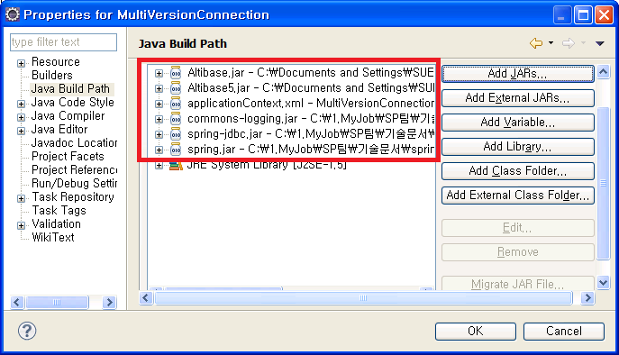

This chapter describes how to integrate FailOver and Altibase Multi-version provided by Altibase.
Connection using FailOver
FailOver is supported starting from ALTIBASE 5.3.3. To use FailOver, FailOver-related properties must be placed in the Connection URL section.
The following is an example of connecting to ALTIBASE using the FailOver. DataSource used DBCP among the methods described above.
Ex) applicationContext.xml file of FailOverConnection
… <bean id="dataSource" class="org.apache.commons.dbcp.BasicDataSource"> <!-- JDBC Driver class name setting --> <property name="driverClassName" value="Altibase.jdbc.driver.AltibaseDriver" /> <property name="URL" value="jdbc:Altibase://192.168.1.62:21020/mydb?AlternateServers=(192.168.1.146:21020) &ConnectionRetryCount=1&ConnectionRetryDelay=1&SessionFailOver=on &LoadBalance=off”/> " /> <property name="username" value="test" /> <property name="password" value="test" /> </bean> …
FailOver related properties that can be defined in the Connection URL section are as follows.
Property | Description |
|---|---|
AlternateServer | Alternative servers to be connected in the event of a failure (IP Address1:Port1, IP Address2:Port2,...)
|
ConnectionRetryCount | The number of retries of connection attempts when an available server connection fails
|
TConnectionRetryDelay | The time to wait before attempting to connect again when the available server connection fails (in seconds) |
LoadBalance | If set to on, random selection is made including the default server and available servers when the first connection is attempted. If set to off, it connects to the default server when it tries to connect for the first time, and if it fails, it connects to the server described ay AlternateServer. |
SessionFailOver | This indicates whether to perform STF (Service Time Fail-Over). CTF(Connection Time Fail-Over) recognizes a failure at the time of DBMS connection, and other available Service Time Fail-Over (STF) instead of the failed DBMS successfully connects to the DBMS of the node, and proceeds to service. A failure occurs during the service which means that the user's application logic is performed again after the session properties are restored by reconning to the DBMS of another available node. This is necessary to perform the operation in the DBMS where the failure occurred once again. |
Please refer to the FailOverConnection project among the attached examples.
To run the FailOverConnection project, Altibase.jar, spring-jdbc.jar, and common-logging.jar files are required in addition to the Spring configuration library file.
Simultaneously connecting ALTIBASE and the previous version
ALTIBASE can connection to lower version at the same time in an application.
In order to distinguish it from the existing Altibase.jar, the ALTIBASE version 5 of JDBC Altibase5.jar, which has been renamed separately, is required.
The following is an example of loading the drivers of two versions of ALTIBASE by using Altibase.jar and Altibase5.jar files.
Ex) applicationContext.xml file of MultiVersionConneciton
<!— DataSource setting for ALTIBASE version 6 -->
<bean id="dataSource1" class="org.springframework.jdbc.datasource.DriverManagerDataSource">
<!-- JDBC Driver class name setting -->
<property name="driverClassName" value="Altibase.jdbc.driver.AltibaseDriver"/>
<!-- Connection URL uppercase note -->
<property name="URL" value="jdbc:Altibase://127.0.0.1:20300/mydb"/>
<!-- DB user account setting -->
<property name="username" value="sys"/>
<!-- DB user password setting -->
<property name="password" value="manager" />
</bean>
<!—DataSource setting for ALTIBASE version 6 -->
<bean id="dataSource2" class="org.springframework.jdbc.datasource.DriverManagerDataSource">
<!-- JDBC Driver class name setting -->
<property name="driverClassName" value="Altibase.jdbc.driver.AltibaseDriver"/>
<!-- Connection URL uppercase note -->
<property name="URL" value="jdbc:Altibase://192.168.1.35:21129/mydb"/>
<!-- DB user account setting -->
<property name="username" value="sys"/>
<!-- DB user password setting -->
<property name="password" value="manager" />
</bean>
<!-- bean setting of DAO class -->
<bean id="accountDao1" class="com.altibase.banking.AccountDao">
<property name="dataSource" ref="dataSource1"/>
</bean>
<!-- bean setting of DAO class -->
<bean id="accountDao2" class="com.altibase.banking.AccountDao">
<property name="dataSource" ref="dataSource2"/>
</bean>
…
AccountApp.java file of MultiVersionConnection
…
Resource resource = new ClassPathResource("applicationContext.xml");
BeanFactory factory = new XmlBeanFactory(resource);
AccountDao accountDao1 = (AccountDao)factory.getBean("accountDao1");
AccountDao accountDao2 = (AccountDao)factory.getBean("accountDao2");
…
To run the MultiVersionConnection project included in the example, Altibase.jar and Altibase5.jar files are required as well as the existing jar file. These files are located in the lib directory where ALTIBASE is installed (ALTIBASE_HOME). The user can use the Altibase5.jar file of the ALTIBASE version 5 and the Altibase.jar file of the previous version.

{kind=link}